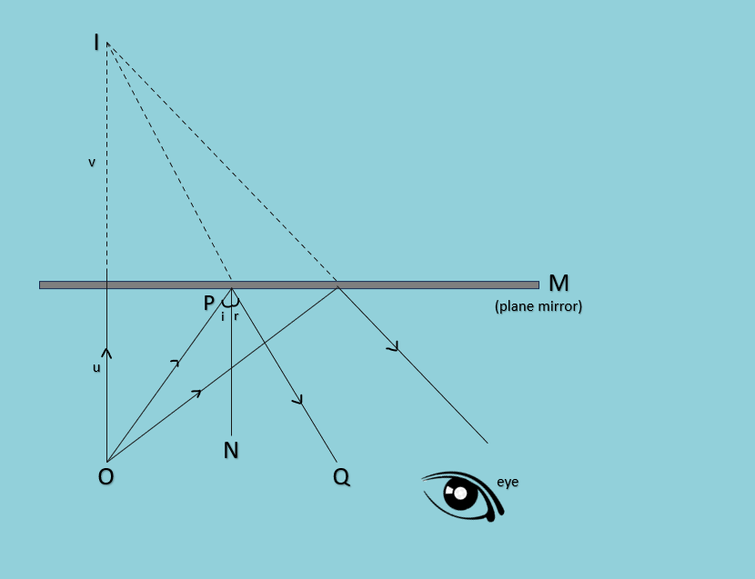
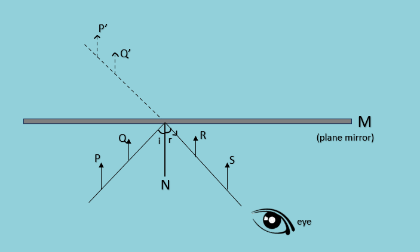
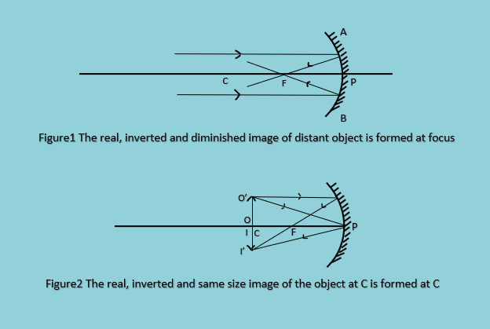

National ICT Award-2025
Grade 10 Practical Physics
Experiment 6: Reflection of Light
Aim of Experiment
To prove that image distance equals object distance in a Plane Mirror.
To measure the angle of incidence and angle of reflection.
Apparatus
Theory
When rays of light are incident on the plane mirror, some of the light is reflected and it follows a path as shown in Figure 1. The two rays are known as incident ray (OP) and reflected ray (PQ). The line drawn perpendicularly to the plane mirror at the point of incidence is the normal.
Procedure (1): Line Method
There are a total of 9 steps to perform the experiment using the Line method.
Procedure (2): Pin Method
There are a total of 7 steps to perform the experiment using the Pin method.
Experiment 7: The Concave Mirror
Aim of Experiment
To determine the focal length of a concave mirror by using the conjugate foci method.
Apparatus
Theory
A concave mirror can produce a real image of a distant object (at infinity). The position of the image is approximately equal to the focal length of the concave mirror. Since it has a real focus, the focal length is positive.
Procedure
Follow the 9 steps and record your measurements.
